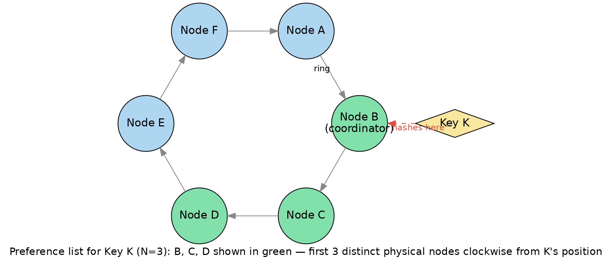
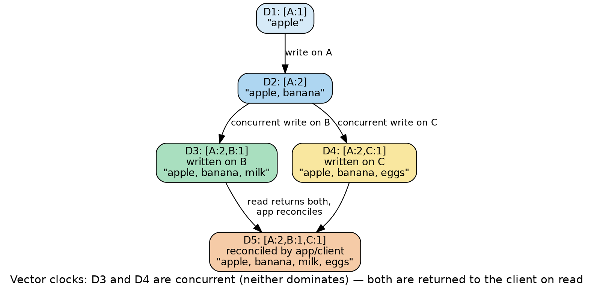
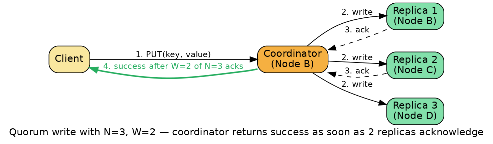

Amazon Dynamo
A system-design deep dive and interview study guide: internal architecture first, then math, diagrams, real-world usage, trade-offs, and follow-up interview questions.
Overview
Dynamo is a key-value store — a database where you save and fetch data using a simple unique ID (a "key") instead of writing SQL queries against tables — that a team at Amazon built and described in a 2007 research paper, "Dynamo: Amazon's Highly Available Key-value Store" (DeCandia et al., SOSP 2007). It was built to solve one very specific business problem: Amazon's shopping cart, and dozens of other services like it, must never refuse a write. If a customer taps "Add to Cart" during a holiday traffic spike, or while a disk is failing, or while a data center is cut off by a network problem, that write has to succeed — Amazon decided it would rather show a customer two slightly different versions of their cart a second later than tell them "sorry, try again." That "always writable" requirement, prioritized over traditional strong consistency, is the single design decision that explains almost everything else about Dynamo's internals.
| Problem | Technique used |
|---|---|
| Spread data over many machines, add/remove machines without a big reshuffle | Consistent hashing |
| Keep working during temporary node/network failures | Sloppy quorum + hinted handoff |
| Detect and repair permanently divergent replicas | Anti-entropy using Merkle trees |
| Handle multiple, possibly conflicting, copies of the same value | Vector clocks with reconciliation at read time |
| Let every node learn about every other node without a central coordinator | Gossip-based membership and failure detection |
We'll walk through each one in the order you'd actually need them to understand a request flowing through the system, with a running worked example: a 6-node cluster with nodes A, B, C, D, E, F, storing a value under key K.
Internal Architecture, Piece by Piece
1.1 Consistent Hashing Ring, Partitioning & Virtual Nodes
The problem it solves. A naive scheme like server = hash(key) % N works fine until you add or remove a server — then N changes, and almost every key remaps to a different machine, forcing a massive, all-at-once data shuffle. Dynamo needed a scheme where adding or removing one node only disturbs that node's immediate neighbors.
How it works. Dynamo applies MD5 to a key, producing a 128-bit number. Treat the space of all possible 128-bit numbers as a circle — the "ring." Every physical node is also hashed onto one or more points ("tokens") on that same ring. To find which node owns a given key, hash the key and walk clockwise around the ring until hitting the first node token — that node is the key's "coordinator" for partitioning purposes.
Worked example. Say our ring is a simplified circle from 0 to 359, with nodes at A=10, B=70, C=140, D=200, E=260, F=320. Key K hashes to position 155. Walking clockwise from 155, the first node token hit is D (at 200) — D is K's first node in partitioning terms.

Why virtual nodes exist. With one point per physical node, random placement doesn't divide the ring into equal arcs — some nodes end up owning disproportionately more key space and traffic, and if a node fails, all of its data has to move somewhere, likely dumped onto one unlucky neighbor. Dynamo's fix: each physical node is assigned many points on the ring (100–200 virtual nodes, not one), which gives three benefits: even failure-recovery load (spread across many survivors, not one), even rebalancing on join/recovery, and heterogeneity-aware capacity (a more powerful machine simply gets more virtual nodes).
The paper describes three partitioning strategies it evolved through, ending on Strategy 3 (production): the hash space is divided into Q equal partitions up front, and each of the S nodes gets Q/S tokens — this made membership metadata roughly 1000x more compact than the original random-token approach and made adding/removing nodes and recomputing Merkle trees much cheaper. Worked example: Q=300 fixed partitions, S=6 physical nodes (A–F) → each node gets 300/6 = 50 virtual nodes. If node C fails, its 50 small partitions hand off to up to 50 different peers rather than dumping onto one neighbor.
1.2 Replication: Preference Lists & Replication Factor N
Consistent hashing alone only tells you where the first copy of a key lives. For durability you need multiple copies — Dynamo calls the count of copies N (the replication factor; Amazon's own internal default was N=3).
Preference list. For key K, take the node found by walking the ring (D) and keep walking clockwise, collecting the next N−1 distinct physical nodes. This ordered list of N nodes is the preference list, kept deliberately longer than N so that if some of the top-N are down, ready fallback nodes already exist further down the list — the raw material sloppy quorum uses.
Worked example. Continuing from 1.1: for key K (first node D), with N=3, walking clockwise from D collects the next two distinct nodes E and F. Preference list for K = [D, E, F]. Any of D, E, F can act as coordinator for reads or writes on K, with Dynamo typically picking whichever is best positioned to keep the request fast.
1.3 Sloppy Quorum & Hinted Handoff
The problem. A strict quorum system requires the same literal N nodes always be used. If one is briefly unreachable, a strict quorum would refuse the write or read — directly violating Dynamo's "always writable" goal.
Sloppy quorum. Instead of insisting on the literal top-N nodes, Dynamo reads and writes against whichever N nodes are currently healthy and reachable, walking further down the preference list if needed. Hinted handoff is what makes this safe: if a healthy stand-in node ends up holding a replica that "belongs" to a currently-down node, it stores that replica with a hint — "this belongs to node X; forward it back when X returns." Once X recovers, the stand-in transfers the data back and deletes its temporary copy.
Worked failure scenario. Preference list for K is [D, E, F], N=3. A client issues PUT(K, "new cart contents"). Coordinator E tries D, E, F — D is down, but E and F succeed (only 2 of 3). Rather than fail or block, the coordinator sends the third copy to the next healthy node down the list, say A, tagged with a hint pointing back to D. The write is acknowledged as successful (E, F, and hinted A = 3 replicas). Later, D restarts, rejoins via gossip, and A pushes the hinted replica back to D before deleting its own temporary copy. This is exactly why Dynamo trades strict consistency for availability: during the outage window, a get() might return the version on A/E/F while D is still stale — a deliberate, temporary inconsistency in exchange for never rejecting the write.
1.4 Data Versioning with Vector Clocks
Why plain timestamps aren't enough. Because sloppy quorum lets writes succeed even when parts of the system are unreachable, and concurrent writes to the same key can come from different coordinators, you can end up with multiple versions of the same object that no wall-clock timestamp can safely order. Dynamo needs to know: is version 2 strictly an update to version 1, or are they concurrent — meaning both must be kept until reconciled?
Vector clocks explained. A vector clock is a list of (node, counter) pairs attached to every version. Each time a node handles a write, it increments its own counter. If every counter in clock 1 is ≤ the corresponding counter in clock 2 (with at least one strictly less), clock 1 is an ancestor — safely discardable. If neither dominates, the versions are concurrent siblings — a real conflict that must be reconciled.

Worked example. A client creates key K; coordinator A stamps it [A:1] (D1). A later update by A produces [A:2] (D2) — D1 is an ancestor, discarded. A network partition happens; A becomes unreachable. One update routes to coordinator B, building on D2: [A:2, B:1] (D3). At the same time, another update routes to coordinator C, also building on D2: [A:2, C:1] (D4). Comparing D3 and D4: neither dominates (D3 has B:1 which D4 lacks; D4 has C:1 which D3 lacks) — D3 and D4 are concurrent siblings. Dynamo stores both and returns both to the next reader, along with a context encoding both clocks. The application (or Dynamo's built-in cart-merge logic) reconciles them — e.g. union of items — into D5, with merged clock [A:2, B:1, C:1], which dominates both siblings.
A known growth problem. If many different nodes coordinate writes to the same key (more likely during extended partitions), the vector clock can grow large. Dynamo's mitigation: each pair also carries a timestamp, and once the clock exceeds a threshold (the paper uses 10 pairs), the oldest pair is dropped — a pragmatic trade-off that can rarely cause an incorrect causal ordering, but in practice clocks rarely grow large since writes are normally handled by top-N nodes.
1.5 Quorum Reads/Writes: the R + W > N Rule
Once you have N replicas, each service tunes two more numbers: W — the minimum replicas that must acknowledge a write — and R — the minimum replicas that must respond to a read (with multiple returned versions reconciled per section 1.4). Dynamo's classic tunable-consistency guideline: R + W > N.

Why this guarantees overlap. Think of N replicas as N boxes. A write touches some W of them; a read later checks some R of them. If W + R > N, by the pigeonhole principle the write-set and read-set cannot possibly be disjoint — at least one box must be in both sets, guaranteeing the read sees the latest write among the versions returned. If R + W ≤ N, a read-set and write-set could be chosen that never intersect, silently returning stale results.
| Config | R + W vs N | Guarantee? | What it means in practice |
|---|---|---|---|
| N=3, R=2, W=2 | 4 > 3 ✅ | Overlap guaranteed | Dynamo's actual production default, "(3,2,2)". Tolerates 1 node down for either a read or write; latency bound by the second-fastest replica; consistency guaranteed as long as no more than 1 replica is unreachable at a time. |
| N=3, R=1, W=1 | 2 ≤ 3 ❌ | No guarantee | Lowest possible latency and highest availability, but reads can return stale data (66.7% chance, see math section). Good for "add to cart," bad for anything needing read-your-writes. |
| N=5, R=3, W=3 | 6 > 5 ✅ | Overlap guaranteed | Stronger durability, still consistent, tolerates 2 replicas down simultaneously for a read or write. Higher latency than N=3 configs in exchange for surviving bigger simultaneous outages. |
A subtlety from the paper: R and W are almost always kept smaller than N, because the latency of an operation is dictated by the slowest of the R (or W) replicas it waits on — requiring all N to respond would make every request as slow as the flakiest single replica.
1.6 Merkle Trees for Anti-Entropy (Replica Synchronization)
The problem. Replicas can drift out of sync. Comparing two replicas key-by-key to find differences means transferring and hashing the entire key range just to find a handful of differing keys — wasteful at scale.
Merkle trees, explained. A hash tree where each leaf is the hash of one key's value, each parent is the hash of its children's hashes concatenated, and the root is a single hash summarizing the entire dataset. Two nodes exchange just the root hash first — if roots match, the ranges are identical, done. If they differ, they exchange the next level down, recursing only into subtrees whose hashes differ, until reaching the leaves that actually differ.
Worked example. A key range of 1,024 keys, arranged as leaves of a balanced Merkle tree of depth log₂(1024) = 10. If only a handful of keys diverged, the two nodes typically need on the order of 10 hash comparisons to pinpoint exactly which keys are out of sync, instead of transferring and hashing all 1,024 — O(log n) instead of O(n).
A practical cost: whenever key-range boundaries change (nodes joining/leaving), the Merkle tree for the new range must be recomputed from scratch — one of the reasons production moved to the fixed-partition Strategy 3 (fewer, more stable range boundaries to recompute).
1.7 Gossip-Based Membership & Failure Detection
The problem. Dynamo has no central coordinator telling every node the current list of nodes and ownership — a central registry would be a single point of failure, directly against the "always available, fully decentralized" design goal.
How gossip works. Every node stores its own view of ring membership and a history of changes. Periodically (once a second in the paper), each node picks one random peer and the two exchange membership histories, merging to the union of what they knew — an "epidemic" protocol where information spreads the way a rumor spreads through a population. Over a small number of rounds, a change reaches every node without a full broadcast or central directory. This is why Dynamo describes itself as a "zero-hop" DHT: since every node eventually learns the full ring layout via gossip, any node can compute a key's entire preference list locally and route directly to the right replica in one hop — unlike classic DHTs (Chord, Pastry) that route through several intermediate peers, adding variable latency at each hop that specifically hurts tail latency.
Failure detection piggybacks on the same idea, purely locally and asymmetrically: node X decides node Y seems "down" only in the context of X trying to talk to Y, and X can locally route around Y without needing a globally-agreed "Y is dead" announcement — avoiding a whole class of distributed-consensus problems.
1.8 Handling Permanent Failures: Replica Synchronization
Hinted handoff (1.3) is designed for temporary unavailability — it assumes the original owner comes back. But disks die, machines get decommissioned, and hinted replicas can themselves get lost if the holding node fails before handing back. This is exactly the job of the anti-entropy protocol built on Merkle trees (1.6): independent of any specific outage, nodes that share replicas of a key range periodically compare Merkle tree roots and repair whatever has diverged — correctly healing the system even from permanent node loss, since a brand-new replacement node simply runs anti-entropy against its peers and pulls over the data it's missing. Dynamo also replicates across multiple data centers for its most critical services, so a facility-level disaster still leaves live, in-sync replicas available elsewhere.
System Design View: a PUT and a GET, End to End
PUT (Write) Walkthrough
- Client request arrives. Via a load balancer to a random node, or (client-library mode) the client itself picks the right node directly using its cached ring view.
- Routing to a coordinator. If the receiving node isn't in K's preference list, it forwards to the first node in the list that is — that node becomes the coordinator.
- Vector clock generation. The coordinator generates a new vector clock (incrementing its own counter, building on the client's last-read context) and writes locally.
- Fan-out to replicas. The coordinator sends the value to the N highest-ranked reachable nodes, using sloppy quorum if a top-N node is down (hinted-handoff tagged).
- Waiting for quorum. The coordinator waits for at least W total acknowledgements (including its own local write).
- Response to client. The coordinator returns success with an opaque context (the vector clock) the client must present on its next write to this key.
- Background propagation. Replicas that missed the synchronous write catch up asynchronously via hinted-handoff forwarding or Merkle-tree anti-entropy.
GET (Read) Walkthrough
- Client request arrives for key K, routed the same way as a write.
- Coordinator selection. Any healthy node in K's sloppy preference list can act as coordinator — no special "only the designated writer" restriction.
- Fan-out to replicas. The coordinator requests the current value(s) from the N highest-ranked reachable nodes.
- Waiting for quorum. The coordinator waits for at least R responses.
- Version comparison. Using vector clocks, the coordinator discards any version that's a strict ancestor of another.
- Reconciliation (if needed). If concurrent siblings remain, the coordinator returns all of them plus a merged context; the client/application reconciles and writes back (looping into the PUT flow).
- Response to client. Either a single unambiguous value, or conflicting versions plus the context needed to write back a merged version.
- Read repair (optional). If the coordinator notices stale replicas among the R it heard from, it can proactively push the correct version to them, reducing load on the separate anti-entropy process.
The Math, Collected in One Place
3.1 Hash Space Size
MD5 produces a 128-bit identifier; the space is treated as circular (position 2128−1 wraps back to 0), large enough that hash collisions between distinct keys are astronomically unlikely.
3.2 Virtual Nodes per Physical Node
Example: Q=300 fixed partitions, S=6 physical nodes → 300/6 = 50 virtual nodes per node. If S grows to 10 (Q unchanged): 300/10 = 30 — existing partitions get reassigned rather than the whole ring being rehashed.
Load-balancing variability around the average share shrinks roughly proportionally to 1/√v as virtual-node count v increases — why real deployments use 100+ virtual nodes per physical node.
3.3 Quorum Rule: R + W > N
Pigeonhole argument: a write claims W of N slots, a read claims R of N slots. If W+R > N, the two sets cannot be disjoint.
Worked example — N=3, R=1, W=1: P(no overlap) = C(2,1)/C(3,1) = 2/3 ≈ 66.7% chance the read misses the replica with the newest value entirely.
Compare: N=3,R=2,W=2 → N−W=1, C(1,2)=0 → P=0 (guaranteed overlap). N=5,R=3,W=3 → N−W=2, C(2,3)=0 → P=0 (guaranteed overlap, tolerates 2 replicas down).
3.4 Merkle Tree Comparison Cost
Worked example: n=1,024 keys → depth = log₂(1024) = 10. Finding and repairing a small number of divergent keys costs on the order of 10 hash exchanges instead of 1,024 direct key comparisons — over 100x less data exchanged for a single divergent leaf.
3.5 SLA / Latency Framing
Amazon's internal SLAs were expressed at the 99.9th percentile (not average/median) because average-based SLAs hide the experience of the customers most affected by tail latency. Since R/W responses are gated by the slowest-of-R or slowest-of-W replica, keeping R and W smaller than N directly lowers tail latency.
Where Dynamo Sits on CAP
CAP theorem states you can't simultaneously guarantee all three of Consistency (every read sees the latest write), Availability (every request gets a non-error response), and Partition tolerance (the system keeps working when network links are cut) — when a partition actually occurs, you must give up either strict consistency or availability for its duration.
Dynamo is a textbook AP system: when the network is partitioned or nodes are unreachable, it chooses to stay available (via sloppy quorum, hinted handoff, and accepting writes on non-ideal replicas) rather than reject requests to preserve strict consistency. It relies on vector clocks plus reconciliation, and background Merkle-tree anti-entropy, to bring replicas back into agreement once the partition heals — a model called eventual consistency: given enough time with no new writes, all replicas converge, but at any instant, different replicas can legitimately disagree.
Practically, this means: a write is never rejected just because some replicas are unreachable (as long as enough are up to satisfy W); a read may return more than one version, pushing conflict resolution onto the application; with well-chosen R/W (R+W>N) you get read-your-own-writes-style guarantees under normal conditions, but never a hard guarantee under all failure conditions; and services layered on Dynamo pick their own point on the consistency/availability/latency dial per use case by tuning N, R, W.
Real-World Usage and Evolution into DynamoDB
Inside Amazon (2007-era Dynamo). The original Dynamo ran internally supporting services with strict availability needs: shopping cart, session management, product catalog, best-seller lists — the paper notes the shopping cart service alone handled tens of millions of requests and well over 3 million checkouts in a single day during 2006-era peak holiday traffic.
The gap that led to DynamoDB. Many Amazon teams actually preferred Amazon SimpleDB (AWS's earlier hosted NoSQL offering) over running their own Dynamo cluster, despite SimpleDB's roughly 10 GB cap per database/domain, because SimpleDB was fully managed while Dynamo required operating your own fleet. That revealed preference — operational simplicity beating raw scalability — directly motivated a new, fully-managed service combining Dynamo's scalability model with SimpleDB's "just declare a table" simplicity.
Amazon DynamoDB launched January 18, 2012 (announced by CTO Werner Vogels) as a public, fully managed cloud database — a related but completely separate implementation from the original internal Dynamo, sharing design principles rather than code.
What changed over the years (per AWS's 2022 USENIX paper and blog posts): multi-tenancy (many customers' partitions co-reside on shared storage nodes, requiring admission control against noisy neighbors); fixed-size (~10 GB) partitions, each a replication group of 3 replicas across Availability Zones with a leader handling writes; a write-ahead log + B-tree storage split, with the log periodically synced to S3 for point-in-time restore; "log replicas" that spin up almost instantly by copying just the recent WAL rather than a full multi-GB partition; and Global/Local Secondary Indexes, DynamoDB Streams, Global Tables, on-demand billing, multi-item ACID transactions, and adaptive capacity — all addressing exactly the kind of uneven traffic the original paper's virtual-node work targeted, at much larger multi-tenant scale. AWS reported that during Prime Day 2024, DynamoDB handled tens of trillions of API calls and peaked at about 146 million requests per second while maintaining single-digit-millisecond latency.
Trade-offs and Known Criticisms
- Eventual consistency surprises application developers. A
get()can return multiple sibling versions instead of one clear answer, a real cognitive burden compared to a traditional relational database's single-answer reads. - Vector clocks can grow unboundedly if writes spread across many coordinating nodes (more likely exactly during the failure scenarios sloppy quorum is designed to survive) — the timestamp-truncation fix trades perfect causal history for bounded overhead, and can rarely cause an incorrect ordering.
- Semantic reconciliation pushes work to applications. Not every data type has an obvious safe merge function like "union the cart items" — many require custom, error-prone conflict-resolution logic or last-write-wins fallback.
- Tuning R/W/N is a real operational burden, requiring understanding the quorum math and monitoring real tail latencies — get it wrong and you either pay unnecessary latency or silently accept stale reads more often than intended.
- No secondary indexes or complex queries in the original Dynamo — a pure key-value get/put interface, a deliberate simplicity trade-off that shaped a whole generation of NoSQL databases' "primary-key-first" design philosophy.
- Merkle tree recomputation cost whenever key-range boundaries shift — a real operational pain point that motivated the later fixed-partition (Strategy 3) approach.
- "Always writable" can surface stale writes as "fresher" than they are — hinted-handoff and sloppy quorum intentionally relax strict replica placement, so unlucky, clustered failure windows can occasionally break the R+W>N assumption in practice.
Common Interview Questions
Conceptual
Math & Calculation
Key Takeaways
References
- DeCandia et al. — "Dynamo: Amazon's Highly Available Key-value Store" (SOSP 2007 paper)
- Werner Vogels — "Amazon's Dynamo" (All Things Distributed, 2007 announcement)
- Werner Vogels — "Amazon DynamoDB — a Fast and Scalable NoSQL Database Service" (Jan 18, 2012 launch announcement)
- Cornell CS 5414 — course mirror of the Dynamo paper
- Amazon Science — "Amazon's DynamoDB — 10 years later"
- Alex DeBrie — "Key Takeaways from the DynamoDB Paper"
- Elhemali et al. — "Amazon DynamoDB: A Scalable, Predictably Performant, and Fully Managed NoSQL Database Service" (USENIX ATC 2022)
- AWS News Blog — "How AWS powered Prime Day 2024 for record-breaking sales"
- AWS News Blog — "Happy 10th Birthday, DynamoDB!"